pacman::p_load(spdep, tmap, sf, ClustGeo,
ggpubr, cluster, factoextra, NbClust,
heatmaply, corrplot, psych, tidyverse, GGally)Geographical Segmentation with Spatially Constrained Clustering
HANDS-ON EXERCISE 6
R ClustGeo SKATER Ward Minimum spanning tree
This exercise follows Geographical Segmentation with Spatially Constrained Clustering Techniques, the reading for the Geographic Segmentation block of the course.
1. Overview
Exercises 4 and 5 asked whether values were spatially clustered. This one asks a different question: given a set of multivariate measurements attached to areal units, how do I carve the study area into a small number of internally homogeneous regions?
That is segmentation rather than detection. The practical use is planning: a telecoms regulator, a market-entry team or a ministry allocating infrastructure does not want 55 townships, it wants five or six coherent zones it can write a policy for.
The complication is that ordinary cluster analysis knows nothing about geography. It will happily place two townships at opposite ends of Shan State in the same cluster because their radio ownership happens to match. A region you cannot draw on a map is not much use as a planning unit. Two families of method address this:
- SKATER, which prunes a minimum spanning tree built on the contiguity graph, so contiguity is enforced by construction;
- ClustGeo, which blends an attribute dissimilarity matrix with a geographic distance matrix through a mixing parameter
alpha, trading homogeneity for compactness continuously.
By the end I should be able to run all three (plain hierarchical, SKATER, ClustGeo) and say something defensible about what each one costs.
2. The Study Area and Data
| Dataset | Description | Format |
|---|---|---|
myanmar_township_boundaries |
Township boundaries for Myanmar, filtered to the three Shan states | ESRI Shapefile (polygon) |
Shan-ICT.csv |
Household ICT ownership from the 2014 Myanmar Population and Housing Census, township level | CSV |
Both come from the Myanmar Information Management Unit (MIMU). The filter keeps Shan (East), Shan (North) and Shan (South), which gives 55 townships.
Shan State is a reasonable choice for this problem. It is large, internally very uneven, and the ICT variables are genuinely multivariate: radio is a legacy technology with a different geography from mobile phones, so the clustering has something to work with rather than six proxies for one underlying wealth gradient.
3. Getting Started
4. Data Import and Preparation
4.1 Importing the township boundaries
shan_sf <- st_read(dsn = "data/geospatial",
layer = "myanmar_township_boundaries") %>%
filter(ST %in% c("Shan (East)", "Shan (North)", "Shan (South)")) %>%
select(c(2:7))Reading layer `myanmar_township_boundaries' from data source
`/Users/jedidiahasaf/Downloads/Projects/isss626-coursework/Hands-on_Ex/Hands-on_Ex06/data/geospatial'
using driver `ESRI Shapefile'
Simple feature collection with 330 features and 14 fields
Geometry type: MULTIPOLYGON
Dimension: XY
Bounding box: xmin: 92.17275 ymin: 9.671252 xmax: 101.1699 ymax: 28.54554
Geodetic CRS: WGS 84glimpse(shan_sf)Rows: 55
Columns: 7
$ ST <chr> "Shan (North)", "Shan (South)", "Shan (South)", "Shan (South)~
$ ST_PCODE <chr> "MMR015", "MMR014", "MMR014", "MMR014", "MMR015", "MMR014", "~
$ DT <chr> "Mongmit", "Taunggyi", "Taunggyi", "Taunggyi", "Mongmit", "Ta~
$ DT_PCODE <chr> "MMR015D008", "MMR014D001", "MMR014D001", "MMR014D001", "MMR0~
$ TS <chr> "Mongmit", "Pindaya", "Ywangan", "Pinlaung", "Mabein", "Kalaw~
$ TS_PCODE <chr> "MMR015017", "MMR014006", "MMR014007", "MMR014009", "MMR01501~
$ geometry <MULTIPOLYGON [arc_degree]> MULTIPOLYGON (((96.96001 23..., MULTIPO~55 townships, six attribute fields and a geometry column, in WGS 84.
4.2 Importing the ICT data
ict <- read_csv("data/aspatial/Shan-ICT.csv")
summary(ict) District Pcode District Name Township Pcode Township Name
Length:55 Length:55 Length:55 Length:55
Class :character Class :character Class :character Class :character
Mode :character Mode :character Mode :character Mode :character
Total households Radio Television Land line phone
Min. : 3318 Min. : 115 Min. : 728 Min. : 20.0
1st Qu.: 8711 1st Qu.: 1260 1st Qu.: 3744 1st Qu.: 266.5
Median :13685 Median : 2497 Median : 6117 Median : 695.0
Mean :18369 Mean : 4487 Mean :10183 Mean : 929.9
3rd Qu.:23471 3rd Qu.: 6192 3rd Qu.:13906 3rd Qu.:1082.5
Max. :82604 Max. :30176 Max. :62388 Max. :6736.0
Mobile phone Computer Internet at home
Min. : 150 Min. : 20.0 Min. : 8.0
1st Qu.: 2037 1st Qu.: 121.0 1st Qu.: 88.0
Median : 3559 Median : 244.0 Median : 316.0
Mean : 6470 Mean : 575.5 Mean : 760.2
3rd Qu.: 7177 3rd Qu.: 507.0 3rd Qu.: 630.5
Max. :48461 Max. :6705.0 Max. :9746.0 4.3 Deriving penetration rates
The raw counts are households owning each device. Using them directly would cluster townships by size, not by technology profile: a township with 80,000 households will have more of everything. Converting to a rate per 1,000 households removes that.
ict_derived <- ict %>%
mutate(`RADIO_PR` = `Radio`/`Total households`*1000) %>%
mutate(`TV_PR` = `Television`/`Total households`*1000) %>%
mutate(`LLPHONE_PR` = `Land line phone`/`Total households`*1000) %>%
mutate(`MPHONE_PR` = `Mobile phone`/`Total households`*1000) %>%
mutate(`COMPUTER_PR` = `Computer`/`Total households`*1000) %>%
mutate(`INTERNET_PR` = `Internet at home`/`Total households`*1000) %>%
rename(`DT_PCODE` =`District Pcode`, `DT`=`District Name`,
`TS_PCODE`=`Township Pcode`, `TS`=`Township Name`,
`TT_HOUSEHOLDS`=`Total households`,
`RADIO`=`Radio`, `TV`=`Television`,
`LLPHONE`=`Land line phone`, `MPHONE`=`Mobile phone`,
`COMPUTER`=`Computer`, `INTERNET`=`Internet at home`)
summary(ict_derived) DT_PCODE DT TS_PCODE TS
Length:55 Length:55 Length:55 Length:55
Class :character Class :character Class :character Class :character
Mode :character Mode :character Mode :character Mode :character
TT_HOUSEHOLDS RADIO TV LLPHONE
Min. : 3318 Min. : 115 Min. : 728 Min. : 20.0
1st Qu.: 8711 1st Qu.: 1260 1st Qu.: 3744 1st Qu.: 266.5
Median :13685 Median : 2497 Median : 6117 Median : 695.0
Mean :18369 Mean : 4487 Mean :10183 Mean : 929.9
3rd Qu.:23471 3rd Qu.: 6192 3rd Qu.:13906 3rd Qu.:1082.5
Max. :82604 Max. :30176 Max. :62388 Max. :6736.0
MPHONE COMPUTER INTERNET RADIO_PR
Min. : 150 Min. : 20.0 Min. : 8.0 Min. : 21.05
1st Qu.: 2037 1st Qu.: 121.0 1st Qu.: 88.0 1st Qu.:138.95
Median : 3559 Median : 244.0 Median : 316.0 Median :210.95
Mean : 6470 Mean : 575.5 Mean : 760.2 Mean :215.68
3rd Qu.: 7177 3rd Qu.: 507.0 3rd Qu.: 630.5 3rd Qu.:268.07
Max. :48461 Max. :6705.0 Max. :9746.0 Max. :484.52
TV_PR LLPHONE_PR MPHONE_PR COMPUTER_PR
Min. :116.0 Min. : 2.78 Min. : 36.42 Min. : 3.278
1st Qu.:450.2 1st Qu.: 22.84 1st Qu.:190.14 1st Qu.:11.832
Median :517.2 Median : 37.59 Median :305.27 Median :18.970
Mean :509.5 Mean : 51.09 Mean :314.05 Mean :24.393
3rd Qu.:606.4 3rd Qu.: 69.72 3rd Qu.:428.43 3rd Qu.:29.897
Max. :842.5 Max. :181.49 Max. :735.43 Max. :92.402
INTERNET_PR
Min. : 1.041
1st Qu.: 8.617
Median : 22.829
Mean : 30.644
3rd Qu.: 41.281
Max. :117.985 5. Exploratory Data Analysis
5.1 Counts versus rates
ggarrange(
ggplot(ict_derived, aes(x = RADIO)) +
geom_histogram(bins = 20, color = "black", fill = "light blue") +
ggtitle("Households owning a radio (count)"),
ggplot(ict_derived, aes(x = RADIO_PR)) +
geom_histogram(bins = 20, color = "black", fill = "light blue") +
ggtitle("Radio per 1,000 households"),
ncol = 2)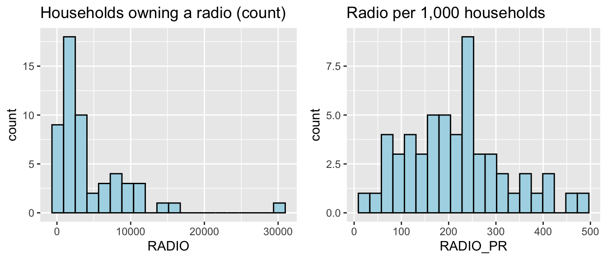
The count distribution is strongly right-skewed, which is a size effect: a handful of large townships sit far out in the tail. The rate is much closer to symmetric. This is the whole justification for section 4.3 in one picture.
5.2 All six penetration rates
radio <- ggplot(ict_derived, aes(x = RADIO_PR)) +
geom_histogram(bins = 20, color = "black", fill = "light blue")
tv <- ggplot(ict_derived, aes(x = TV_PR)) +
geom_histogram(bins = 20, color = "black", fill = "light blue")
llphone <- ggplot(ict_derived, aes(x = LLPHONE_PR)) +
geom_histogram(bins = 20, color = "black", fill = "light blue")
mphone <- ggplot(ict_derived, aes(x = MPHONE_PR)) +
geom_histogram(bins = 20, color = "black", fill = "light blue")
computer <- ggplot(ict_derived, aes(x = COMPUTER_PR)) +
geom_histogram(bins = 20, color = "black", fill = "light blue")
internet <- ggplot(ict_derived, aes(x = INTERNET_PR)) +
geom_histogram(bins = 20, color = "black", fill = "light blue")
ggarrange(radio, tv, llphone, mphone, computer, internet,
ncol = 3, nrow = 2)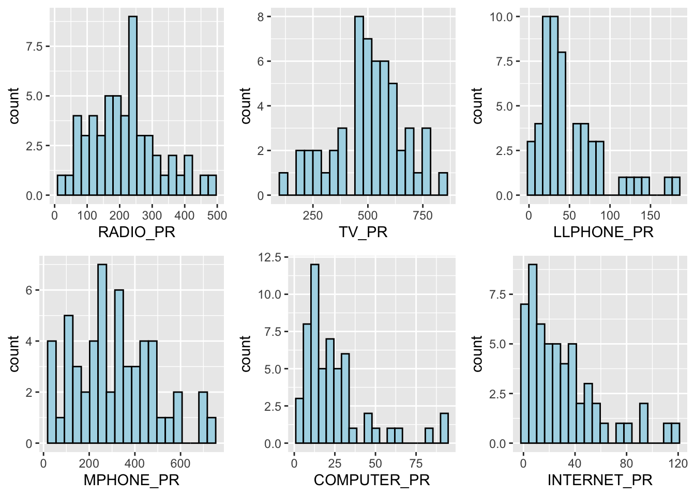
Radio and TV are broad and roughly symmetric. Landline, computer and internet are all heavily right-skewed with a floor near zero, which is what low-penetration technology looks like: most townships have almost none, a few urban ones have some.
5.3 Joining geospatial and aspatial data
shan_sf <- left_join(shan_sf, ict_derived, by = c("TS_PCODE" = "TS_PCODE"))sum(!is.na(shan_sf$TT_HOUSEHOLDS))[1] 55All 55 townships matched on TS_PCODE. Worth checking rather than assuming, because a left join silently produces NA rather than failing.
5.4 Choropleths: why the rate matters
TT_HOUSEHOLDS.map <- tm_shape(shan_sf) +
tm_polygons(fill = "TT_HOUSEHOLDS",
fill.scale = tm_scale_intervals(n = 5, style = "jenks"),
fill.legend = tm_legend(title = "Total households")) +
tm_borders(col_alpha = 0.5)
RADIO.map <- tm_shape(shan_sf) +
tm_polygons(fill = "RADIO",
fill.scale = tm_scale_intervals(n = 5, style = "jenks"),
fill.legend = tm_legend(title = "Radio (count)")) +
tm_borders(col_alpha = 0.5)
tmap_arrange(TT_HOUSEHOLDS.map, RADIO.map, asp = NA, ncol = 2)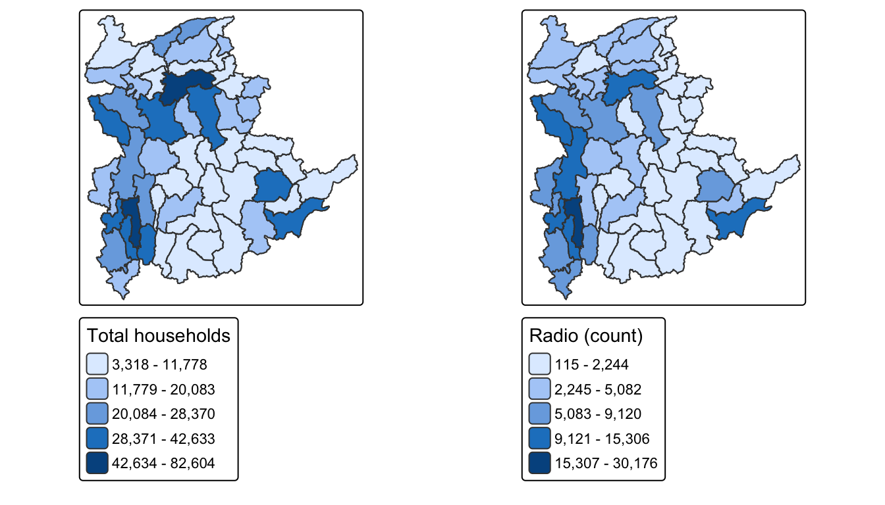
The two maps are near-identical. The count map is essentially a population map.
RADIO_PR.map <- tm_shape(shan_sf) +
tm_polygons(fill = "RADIO_PR",
fill.scale = tm_scale_intervals(n = 5, style = "jenks"),
fill.legend = tm_legend(title = "Radio per 1,000")) +
tm_borders(col_alpha = 0.5)
tmap_arrange(TT_HOUSEHOLDS.map, RADIO_PR.map, asp = NA, ncol = 2)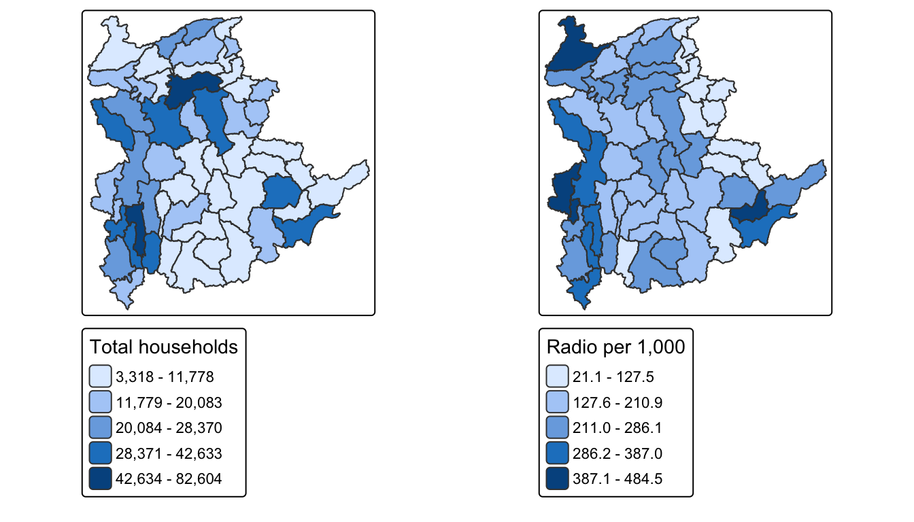
Once normalised the pattern inverts in places: some of the least populous townships have the highest radio penetration. That is a real signal, and it was completely hidden in the count map.
6. Correlation Analysis
Cluster analysis on strongly collinear variables effectively double-counts whatever they share.
cluster_vars.cor = cor(ict_derived[,12:17])
corrplot.mixed(cluster_vars.cor,
lower = "ellipse",
upper = "number",
tl.pos = "lt",
diag = "l",
tl.col = "black")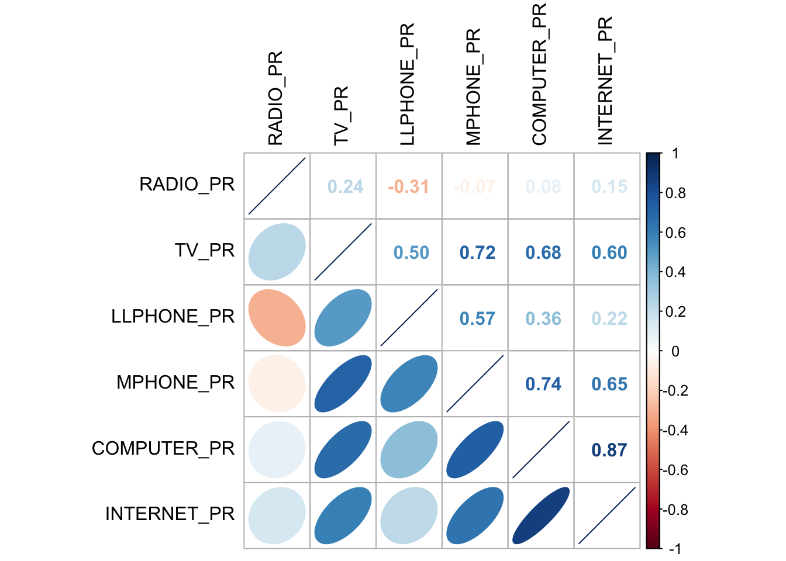
NoteWhich pair actually has to go
COMPUTER_PR and INTERNET_PR correlate at 0.87, far above any other pair (MPHONE_PR–COMPUTER_PR is 0.74, TV_PR–MPHONE_PR is 0.72). In 2014 Myanmar a home internet connection almost always implied a computer, so the two are close to the same measurement. I drop INTERNET_PR and keep COMPUTER_PR, following the handout.
Worth noting what is not collinear: RADIO_PR is essentially uncorrelated with everything else (its largest correlation with any other variable is 0.15). Radio is not a proxy for wealth here, it is its own axis, and it will do real work in the clustering.
7. Hierarchical Cluster Analysis
7.1 Extracting the clustering variables
cluster_vars <- shan_sf %>%
st_set_geometry(NULL) %>%
select("TS.x", "RADIO_PR", "TV_PR", "LLPHONE_PR", "MPHONE_PR", "COMPUTER_PR")
row.names(cluster_vars) <- cluster_vars$"TS.x"
shan_ict <- select(cluster_vars, c(2:6))
head(shan_ict, 10) RADIO_PR TV_PR LLPHONE_PR MPHONE_PR COMPUTER_PR
Mongmit 286.1852 554.1313 35.30618 260.6944 12.15939
Pindaya 417.4647 505.1300 19.83584 162.3917 12.88190
Ywangan 484.5215 260.5734 11.93591 120.2856 4.41465
Pinlaung 231.6499 541.7189 28.54454 249.4903 13.76255
Mabein 449.4903 708.6423 72.75255 392.6089 16.45042
Kalaw 280.7624 611.6204 42.06478 408.7951 29.63160
Pekon 318.6118 535.8494 39.83270 214.8476 18.97032
Lawksawk 387.1017 630.0035 31.51366 320.5686 21.76677
Nawnghkio 349.3359 547.9456 38.44960 323.0201 15.76465
Kyaukme 210.9548 601.1773 39.58267 372.4930 30.947097.2 Standardisation
shan_ict.std <- normalize(shan_ict)
summary(shan_ict.std) RADIO_PR TV_PR LLPHONE_PR MPHONE_PR
Min. :0.0000 Min. :0.0000 Min. :0.0000 Min. :0.0000
1st Qu.:0.2544 1st Qu.:0.4600 1st Qu.:0.1123 1st Qu.:0.2199
Median :0.4097 Median :0.5523 Median :0.1948 Median :0.3846
Mean :0.4199 Mean :0.5416 Mean :0.2703 Mean :0.3972
3rd Qu.:0.5330 3rd Qu.:0.6750 3rd Qu.:0.3746 3rd Qu.:0.5608
Max. :1.0000 Max. :1.0000 Max. :1.0000 Max. :1.0000
COMPUTER_PR
Min. :0.00000
1st Qu.:0.09598
Median :0.17607
Mean :0.23692
3rd Qu.:0.29868
Max. :1.00000 shan_ict.z <- scale(shan_ict)
describe(shan_ict.z) vars n mean sd median trimmed mad min max range skew kurtosis
RADIO_PR 1 55 0 1 -0.04 -0.06 0.94 -1.85 2.55 4.40 0.48 -0.27
TV_PR 2 55 0 1 0.05 0.04 0.78 -2.47 2.09 4.56 -0.38 -0.23
LLPHONE_PR 3 55 0 1 -0.33 -0.15 0.68 -1.19 3.20 4.39 1.37 1.49
MPHONE_PR 4 55 0 1 -0.05 -0.06 1.01 -1.58 2.40 3.98 0.48 -0.34
COMPUTER_PR 5 55 0 1 -0.26 -0.18 0.64 -1.03 3.31 4.34 1.80 2.96
se
RADIO_PR 0.13
TV_PR 0.13
LLPHONE_PR 0.13
MPHONE_PR 0.13
COMPUTER_PR 0.13r <- ggplot(ict_derived, aes(x = RADIO_PR)) +
geom_histogram(bins = 20, color = "black", fill = "light blue") +
ggtitle("Raw")
s <- ggplot(as.data.frame(shan_ict.std), aes(x = RADIO_PR)) +
geom_histogram(bins = 20, color = "black", fill = "light blue") +
ggtitle("Min-Max")
z <- ggplot(as.data.frame(shan_ict.z), aes(x = RADIO_PR)) +
geom_histogram(bins = 20, color = "black", fill = "light blue") +
ggtitle("Z-score")
ggarrange(r, s, z, ncol = 3, nrow = 1)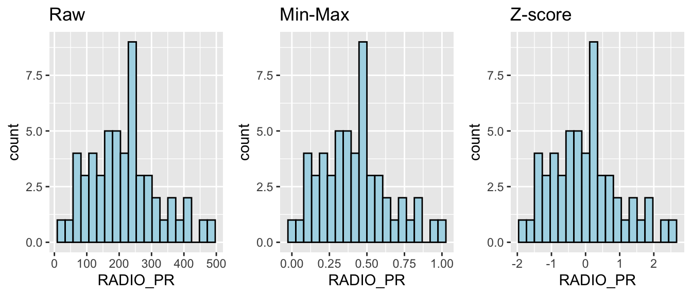
The shape is identical in all three. Standardisation rescales an axis, it does not reshape a distribution. What it changes is how much each variable counts when distances between townships are computed, and I come back to that in section 11.
7.3 Proximity matrix
proxmat <- dist(shan_ict, method = 'euclidean')7.4 Choosing the linkage
agnes() reports an agglomerative coefficient, where values near 1 indicate a stronger clustering structure.
m <- c("average", "single", "complete", "ward")
names(m) <- c("average", "single", "complete", "ward")
ac <- function(x) { agnes(shan_ict, method = x)$ac }
map_dbl(m, ac) average single complete ward
0.8131144 0.6628705 0.8950702 0.9427730 Ward wins clearly at 0.943, against 0.895 for complete and 0.663 for single linkage. Single linkage performing worst is expected: it chains, producing one large straggly cluster and several singletons. Ward is used from here.
7.5 How many clusters?
set.seed(12345)
gap_stat <- clusGap(shan_ict, FUN = hcut, nstart = 25, K.max = 10, B = 50)
print(gap_stat, method = "firstmax")Clustering Gap statistic ["clusGap"] from call:
clusGap(x = shan_ict, FUNcluster = hcut, K.max = 10, B = 50, nstart = 25)
B=50 simulated reference sets, k = 1..10; spaceH0="scaledPCA"
--> Number of clusters (method 'firstmax'): 1
logW E.logW gap SE.sim
[1,] 8.407129 8.680794 0.2736651 0.04460994
[2,] 8.130029 8.350712 0.2206824 0.03880130
[3,] 7.992265 8.202550 0.2102844 0.03362652
[4,] 7.862224 8.080655 0.2184311 0.03784781
[5,] 7.756461 7.978022 0.2215615 0.03897071
[6,] 7.665594 7.887777 0.2221833 0.03973087
[7,] 7.590919 7.806333 0.2154145 0.04054939
[8,] 7.526680 7.731619 0.2049390 0.04198644
[9,] 7.458024 7.660795 0.2027705 0.04421874
[10,] 7.377412 7.593858 0.2164465 0.04540947fviz_gap_stat(gap_stat)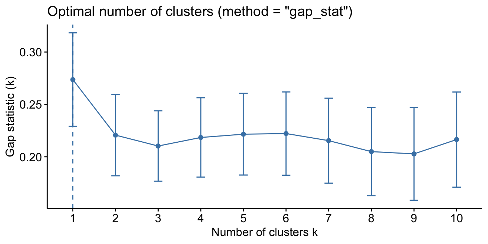
ImportantThe gap statistic says one cluster, and I should not pretend otherwise
firstmax returns k = 1. The honest reading is that the gap statistic finds no strong evidence of cluster structure in these five variables at all: the gap never rises above its k=1 value of 0.274, and from k=2 to k=10 it sits in a narrow band between 0.203 and 0.222.
That is not a number I can report as “the answer is 6”. What I can say is that given a decision to partition, k = 6 is the local maximum within the usable range and is what the handout adopts, so I use 6 for comparability. But the segmentation here rests on a planning decision to have six regions, not on a statistical finding that six exist.
7.6 The dendrogram
plot(hclust_ward <- hclust(proxmat, method = 'ward.D'), cex = 0.6)
rect.hclust(hclust_ward, k = 6, border = 2:5)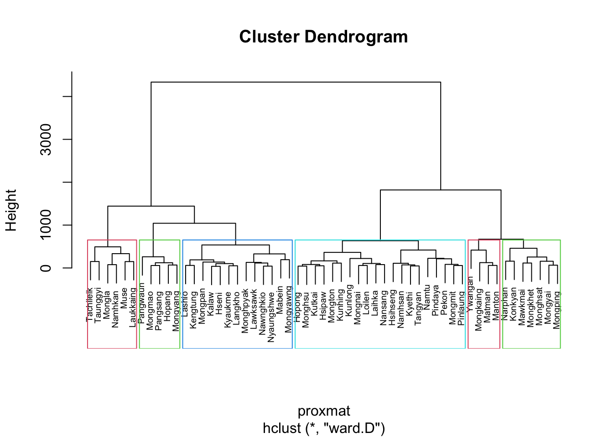
7.7 Visually-driven analysis with a cluster heatmap
shan_ict_mat <- data.matrix(shan_ict)
heatmaply(normalize(shan_ict_mat),
Colv = NA,
dist_method = "euclidean",
hclust_method = "ward.D",
seriate = "OLO",
colors = Blues,
k_row = 6,
margins = c(NA, 200, 60, NA),
fontsize_row = 4,
fontsize_col = 5,
main = "Geographic Segmentation of Shan State by ICT indicators",
xlab = "ICT Indicators",
ylab = "Townships of Shan State")7.8 Mapping the clusters
groups <- as.factor(cutree(hclust_ward, k = 6))
shan_sf_cluster <- cbind(shan_sf, as.matrix(groups)) %>%
rename(`CLUSTER` = `as.matrix.groups.`)
table(shan_sf_cluster$CLUSTER)
1 2 3 4 5 6
20 4 13 6 7 5 qtm(shan_sf_cluster, "CLUSTER")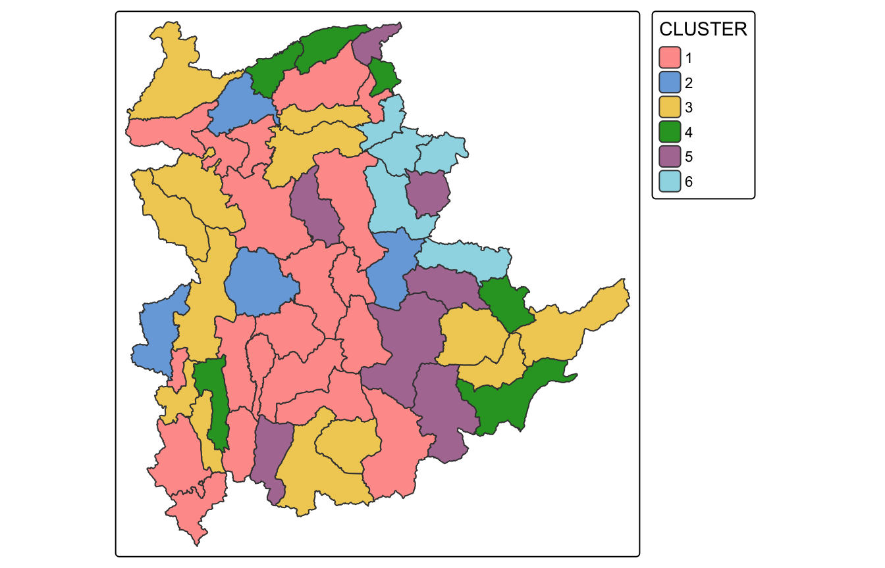
The clusters are badly fragmented. Cluster 1 alone appears in pieces scattered across the whole state. As a typology this is fine, but as a set of planning regions it is unusable, which is exactly the motivation for the next two sections.
8. Spatially Constrained Clustering: SKATER
8.1 Converting to a spatial object
shan_sp <- as_Spatial(shan_sf)8.2 Neighbour list
shan.nb <- poly2nb(shan_sp)
summary(shan.nb)Neighbour list object:
Number of regions: 55
Number of nonzero links: 264
Percentage nonzero weights: 8.727273
Average number of links: 4.8
Link number distribution:
2 3 4 5 6 7 8 9
5 9 7 21 4 3 5 1
5 least connected regions:
3 5 7 9 47 with 2 links
1 most connected region:
8 with 9 links264 non-zero links, 4.8 neighbours on average, nothing isolated. A township with no neighbours would break the minimum spanning tree, so this check matters.
coords <- st_coordinates(st_centroid(st_geometry(shan_sf)))
plot(st_geometry(shan_sf), border = grey(.5))
plot(shan.nb, coords, col = "blue", add = TRUE)
8.3 Edge costs and the minimum spanning tree
The cost of each edge is the attribute dissimilarity between the two townships it joins. Note the weights style is B, not row-standardised: these are distances, and scaling them per row would destroy their meaning.
lcosts <- nbcosts(shan.nb, shan_ict)
shan.w <- nb2listw(shan.nb, lcosts, style = "B")
summary(shan.w)Characteristics of weights list object:
Neighbour list object:
Number of regions: 55
Number of nonzero links: 264
Percentage nonzero weights: 8.727273
Average number of links: 4.8
Link number distribution:
2 3 4 5 6 7 8 9
5 9 7 21 4 3 5 1
5 least connected regions:
3 5 7 9 47 with 2 links
1 most connected region:
8 with 9 links
Weights style: B
Weights constants summary:
n nn S0 S1 S2
B 55 3025 76267.65 58260785 522016004shan.mst <- mstree(shan.w)
dim(shan.mst)[1] 54 354 edges for 55 nodes, as a spanning tree must have.
plot(st_geometry(shan_sf), border = gray(.5))
plot.mst(shan.mst, coords, col = "blue",
cex.lab = 0.7, cex.circles = 0.005, add = TRUE)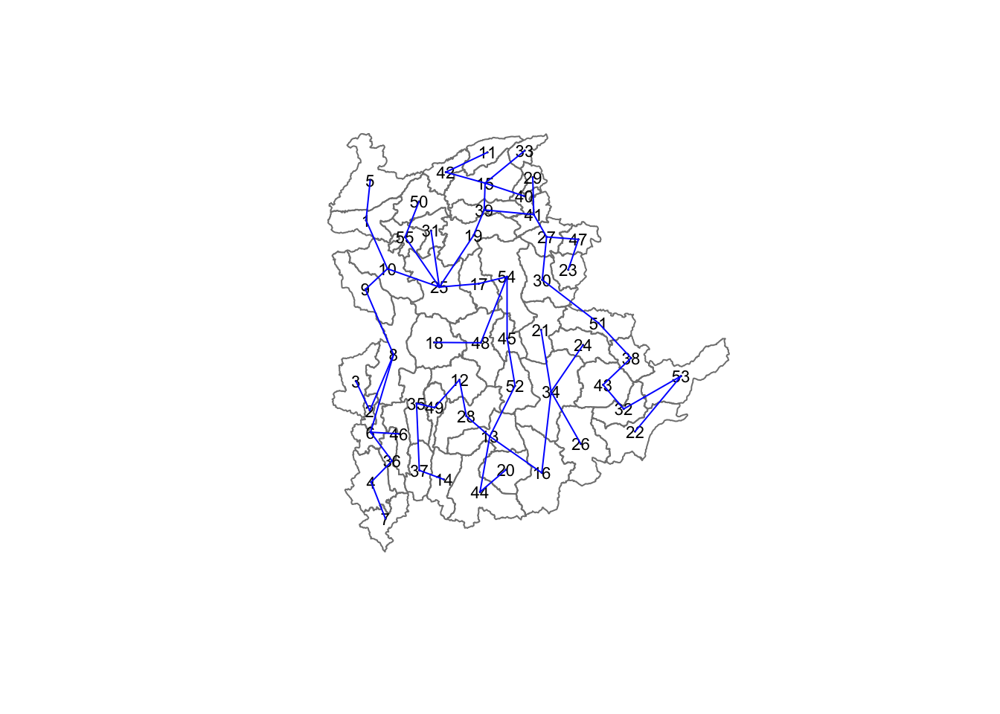
8.4 Pruning the tree
clust6 <- spdep::skater(edges = shan.mst[,1:2],
data = shan_ict,
method = "euclidean",
ncuts = 5)
table(clust6$groups)
1 2 3 4 5 6
22 18 11 2 1 1
ImportantSKATER buys contiguity with badly unbalanced clusters
The six groups are 22, 18, 11, 2, 1, 1. Two of the six “regions” are single townships and a third has two. Effectively this is a three-region solution with three outliers shaved off.
That is a structural property of the method, not bad luck. SKATER can only cut edges of the spanning tree, so an extreme township that sits on a leaf gets isolated by the cheapest available cut long before the algorithm will split a large interior block. If the goal is six comparably sized planning regions, SKATER at ncuts = 5 does not deliver them.
clust6$ssto[1] 12612.52clust6$ssw[1] 12612.515 10977.044 9961.641 9540.422 9122.654 8735.162Total sum of squares is 12,613 and each of the five cuts reduces the within-cluster sum of squares, ending at 8,735. The cuts are doing real work, just unevenly.
plot(st_geometry(shan_sf), border = gray(.5))
plot(clust6, coords, cex.lab = .7,
groups.colors = c("red", "green", "blue", "brown", "pink"),
cex.circles = 0.005, add = TRUE)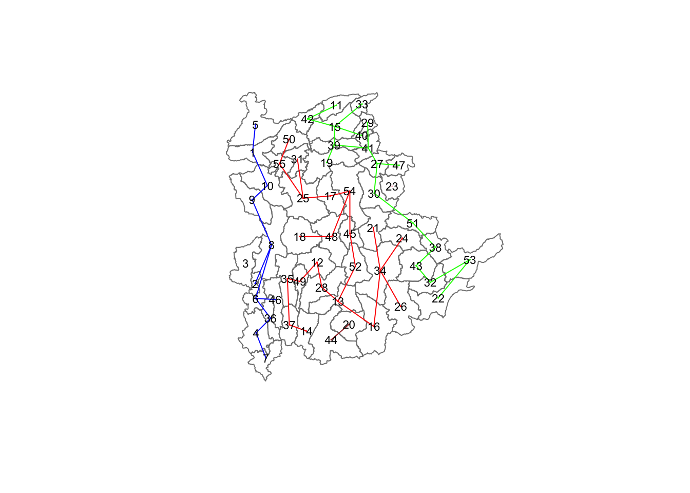
8.5 Comparing unconstrained and constrained
groups_mat <- as.matrix(clust6$groups)
shan_sf_spatialcluster <- cbind(shan_sf_cluster, as.factor(groups_mat)) %>%
rename(`SP_CLUSTER` = `as.factor.groups_mat.`)
tmap_arrange(qtm(shan_sf_cluster, "CLUSTER") + tm_borders(col_alpha = 0.5),
qtm(shan_sf_spatialcluster, "SP_CLUSTER") + tm_borders(col_alpha = 0.5),
asp = NA, ncol = 2)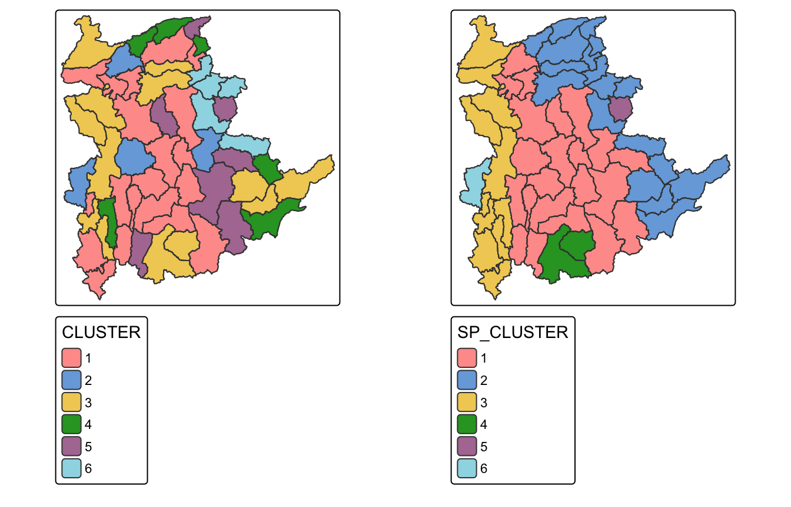
The right-hand map is made of solid contiguous blocks. That is the entire point of SKATER, and it is visually obvious.
9. Spatially Constrained Clustering: ClustGeo
9.1 Ward-like clustering without a spatial constraint
nongeo_cluster <- hclustgeo(proxmat)
plot(nongeo_cluster, cex = 0.5)
rect.hclust(nongeo_cluster, k = 6, border = 2:5)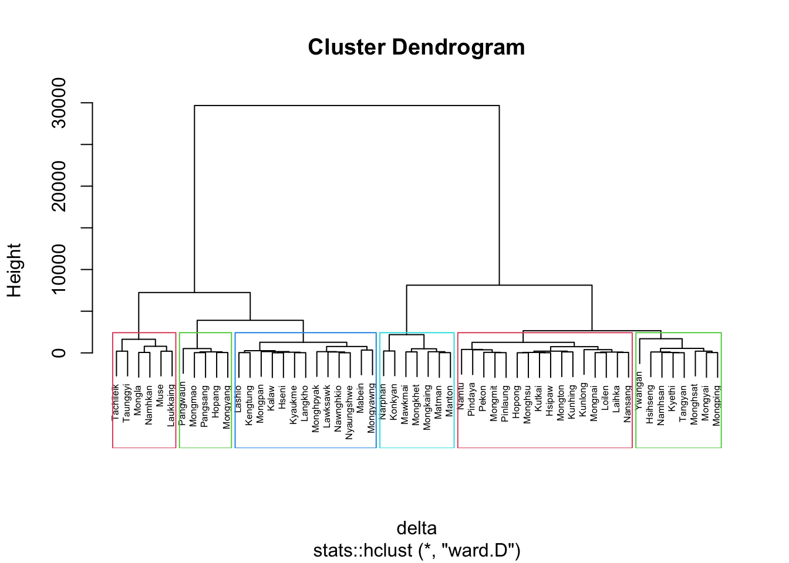
Important
hclustgeo() with no constraint is not the same as the hclust() above
The handout presents hclustgeo(proxmat) as doing “a typical Ward-like hierarchical clustering just like hclust()”. It is Ward-like, but it is not the same Ward.
My hclust() call in section 7.6 used method = "ward.D" and gave cluster sizes 20/4/13/6/7/5. hclustgeo(proxmat) gives 16/8/13/6/7/5. I checked where the difference comes from, and hclustgeo(proxmat) reproduces hclust(proxmat, "ward.D2") exactly, township for township, not ward.D.
The distinction is that ward.D2 squares the dissimilarities before applying the Ward update and ward.D does not, so only ward.D2 implements Ward’s actual criterion on a non-squared input distance matrix. Twelve townships move between clusters 1 and 2 as a result. It is a small difference here but it means the section 7 dendrogram and the section 9 dendrogram are not two views of one clustering.
groups <- as.factor(cutree(nongeo_cluster, k = 6))
shan_sf_ngeo_cluster <- cbind(shan_sf, as.matrix(groups)) %>%
rename(`CLUSTER` = `as.matrix.groups.`)qtm(shan_sf_ngeo_cluster, "CLUSTER")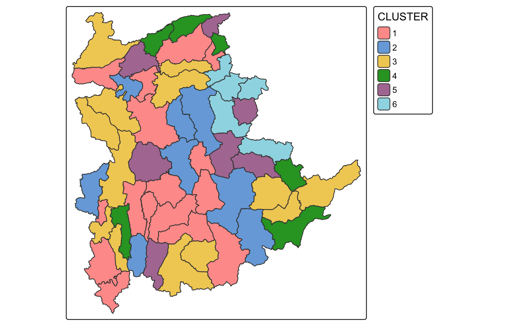
9.2 Choosing the mixing parameter
D0 holds attribute dissimilarity, D1 holds geographic distance, and alpha sets how much weight goes to each.
dist <- st_distance(shan_sf, shan_sf)
distmat <- as.dist(dist)cr <- choicealpha(proxmat, distmat, range.alpha = seq(0, 1, 0.1), K = 6, graph = TRUE)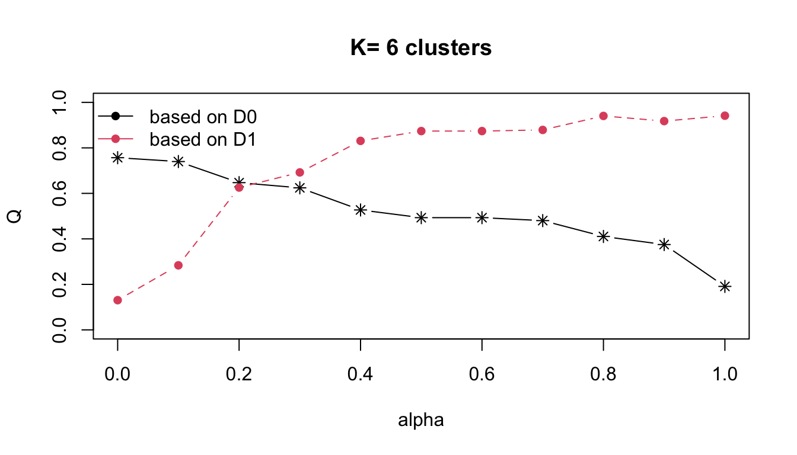
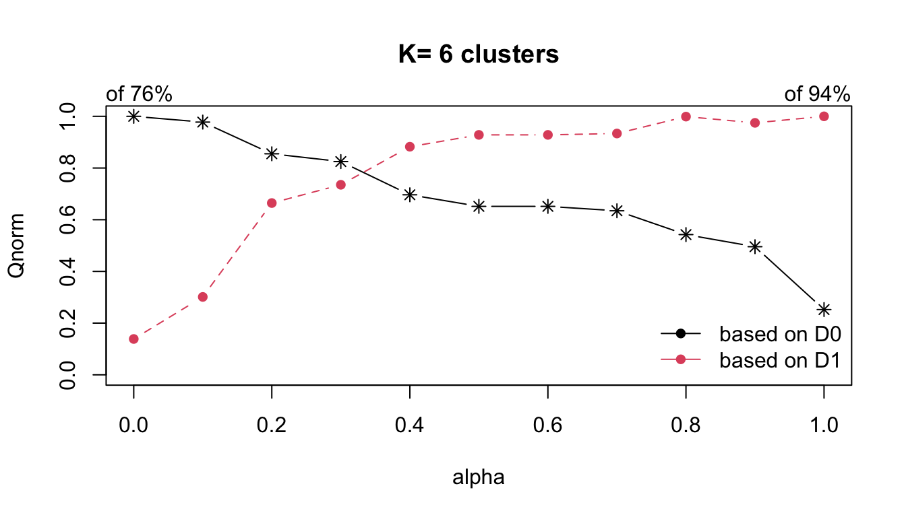
round(cr$Qnorm, 3) Q0norm Q1norm
alpha=0 1.000 0.139
alpha=0.1 0.978 0.301
alpha=0.2 0.855 0.665
alpha=0.3 0.825 0.735
alpha=0.4 0.697 0.882
alpha=0.5 0.652 0.928
alpha=0.6 0.652 0.928
alpha=0.7 0.635 0.934
alpha=0.8 0.543 0.999
alpha=0.9 0.496 0.975
alpha=1 0.252 1.000
NoteReading the alpha curves
Q0norm is the proportion of attribute homogeneity retained, Q1norm the geographic homogeneity. Moving from alpha = 0 to alpha = 0.2 costs about 14% of attribute homogeneity (1.000 → 0.855) and buys a jump in geographic homogeneity from 0.139 to 0.665. That is a very favourable exchange and it is why 0.2 is the conventional choice here.
Pushing on to alpha = 0.3 costs a further 3 points of attribute homogeneity for 7 points of geographic, still positive but clearly past the knee. I follow the handout and use 0.2.
9.3 The spatially constrained solution
clustG <- hclustgeo(proxmat, distmat, alpha = 0.2)
groups <- as.factor(cutree(clustG, k = 6))
shan_sf_Gcluster <- cbind(shan_sf, as.matrix(groups)) %>%
rename(`CLUSTER` = `as.matrix.groups.`)
table(shan_sf_Gcluster$CLUSTER)
1 2 3 4 5 6
10 9 7 9 12 8 qtm(shan_sf_Gcluster, "CLUSTER")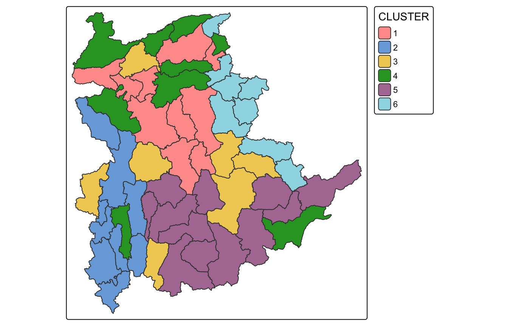
Much more balanced than SKATER (12/10/9/9/8/7, no singletons) and visibly more spatially coherent than the unconstrained solution, though not perfectly contiguous. Section 11 measures that.
10. Visual Interpretation of Clusters
10.1 One variable at a time
ggplot(data = shan_sf_ngeo_cluster, aes(x = CLUSTER, y = RADIO_PR)) +
geom_boxplot()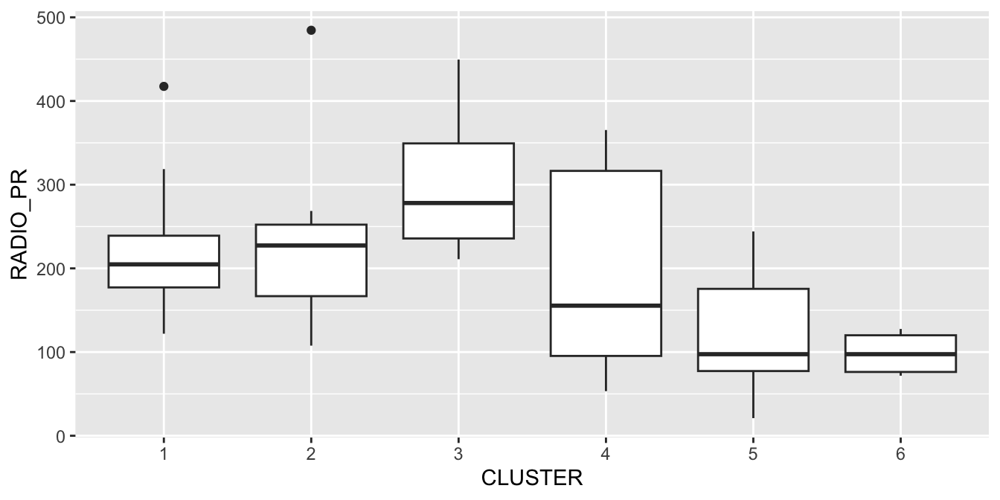
Cluster 3 has the highest median radio penetration and cluster 6 the lowest, with cluster 5 also low. A single variable only ever tells part of the story though.
10.2 Parallel coordinate plot
pc_cols <- match(c("RADIO_PR", "TV_PR", "LLPHONE_PR", "MPHONE_PR", "COMPUTER_PR"),
names(shan_sf_ngeo_cluster))
ggparcoord(data = shan_sf_ngeo_cluster,
columns = pc_cols,
scale = "globalminmax",
alphaLines = 0.2,
boxplot = TRUE,
title = "Parallel coordinates of ICT variables by cluster") +
facet_grid(~ CLUSTER) +
theme(axis.text.x = element_text(angle = 30, hjust = 1))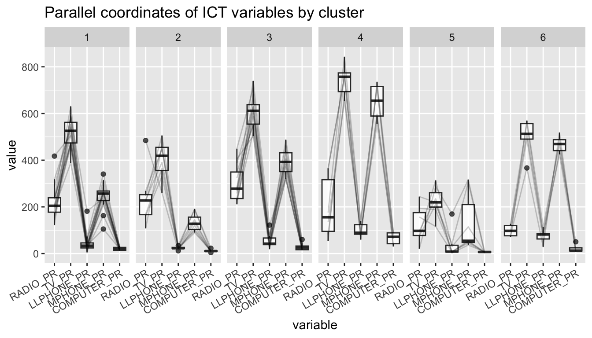
10.3 Cluster means
shan_sf_ngeo_cluster %>%
st_set_geometry(NULL) %>%
group_by(CLUSTER) %>%
summarise(n = n(),
mean_RADIO_PR = round(mean(RADIO_PR), 1),
mean_TV_PR = round(mean(TV_PR), 1),
mean_LLPHONE_PR = round(mean(LLPHONE_PR), 1),
mean_MPHONE_PR = round(mean(MPHONE_PR), 1),
mean_COMPUTER_PR = round(mean(COMPUTER_PR), 1))# A tibble: 6 x 7
CLUSTER n mean_RADIO_PR mean_TV_PR mean_LLPHONE_PR mean_MPHONE_PR
<chr> <int> <dbl> <dbl> <dbl> <dbl>
1 1 16 221. 521. 44.2 246.
2 2 8 237. 402. 23.9 134.
3 3 13 300. 611. 52.2 392.
4 4 6 196. 744. 99 651.
5 5 7 124 224. 38 132
6 6 5 98.6 499. 74.5 468.
# i 1 more variable: mean_COMPUTER_PR <dbl>The six profiles are interpretable:
- Cluster 4 (n = 6) is the connected one: highest on TV (744), landline (99), mobile
- and computer (65.5) by a wide margin. These are the urban centres.
- Cluster 5 (n = 7) is the opposite on everything modern (TV 224, mobile 132, computer 6.7) but mid-range on radio. Low-penetration remote townships.
- Cluster 6 (n = 5) is the interesting one: lowest radio of all (98.6) yet high mobile (468). These townships appear to have skipped radio rather than lagged on it.
- Cluster 3 (n = 13) is the high-radio group (300) with solid mobile (392).
- Clusters 1 and 2 are the middle, separated mainly by mobile and TV.
NoteRadio is doing the discriminating
Clusters 5 and 6 have almost the same low-ish profile on landline and computer, yet they are separated decisively by radio: 124 versus 98.6 on radio but 132 versus 468 on mobile. Without RADIO_PR in the variable set these two groups would likely collapse together. That is consistent with the correlation matrix in section 6, where radio was the one variable independent of the rest.
11. My Own Exploration: What Does the Spatial Constraint Actually Cost?
Every method here claims a different balance between two things I can measure directly:
- attribute homogeneity, as the total within-cluster sum of squares on standardised variables (lower is better);
- spatial coherence, as the number of contiguous pieces the six clusters break into (6 is perfect, higher is worse).
The handout asserts the trade-off exists. I wanted the numbers.
11.1 Counting contiguous pieces
pieces <- function(lab, nb) {
total <- 0
for (k in unique(lab)) {
idx <- which(lab == k); seen <- integer(0); comp <- 0
for (i in idx) {
if (i %in% seen) next
comp <- comp + 1; stack <- i
while (length(stack)) {
v <- stack[1]; stack <- stack[-1]
if (v %in% seen) next
seen <- c(seen, v)
nbrs <- nb[[v]]; nbrs <- nbrs[nbrs != 0]
stack <- c(stack, intersect(nbrs[!(nbrs %in% seen)], idx))
}
}
total <- total + comp
}
total
}
wss <- function(lab) {
x <- scale(shan_ict)
sum(sapply(unique(lab), function(k) {
s <- x[lab == k, , drop = FALSE]
if (nrow(s) < 2) return(0)
sum(scale(s, scale = FALSE)^2)
}))
}11.2 The trade-off, measured
cg3 <- cutree(hclustgeo(proxmat, distmat, alpha = 0.3), 6)
solutions <- list(
`hclust (ward.D)` = cutree(hclust_ward, 6),
`hclustgeo (a = 0)` = cutree(nongeo_cluster, 6),
`ClustGeo a = 0.2` = cutree(clustG, 6),
`ClustGeo a = 0.3` = cg3,
`SKATER` = clust6$groups
)
tibble(
method = names(solutions),
pieces = sapply(solutions, pieces, nb = shan.nb),
within_SS = round(sapply(solutions, wss), 1),
sizes = sapply(solutions, function(l)
paste(sort(as.vector(table(l)), decreasing = TRUE), collapse = "/"))
)# A tibble: 5 x 4
method pieces within_SS sizes
<chr> <dbl> <dbl> <chr>
1 hclust (ward.D) 24 107. 20/13/7/6/5/4
2 hclustgeo (a = 0) 28 110. 16/13/8/7/6/5
3 ClustGeo a = 0.2 18 130. 12/10/9/9/8/7
4 ClustGeo a = 0.3 17 134. 21/8/8/7/6/5
5 SKATER 6 151. 22/18/11/2/1/1
ImportantThe constraint is expensive, and ClustGeo does not actually enforce it
Three things came out of this that I did not get from the maps.
The unconstrained solutions are extremely fragmented. Six clusters break into 24 and 28 separate patches. That is roughly half of the 55 townships sitting in a patch of their own or nearly so. “Fragmented” undersells it.
SKATER’s contiguity is absolute and the price is 42%. It returns exactly 6 pieces for 6 clusters, as guaranteed by construction. Within-cluster sum of squares rises from 106.6 to 151.1, which is 42% worse attribute homogeneity. That is the real cost of mappable regions on this data, and it is not small.
ClustGeo at alpha = 0.2 does not deliver contiguity. This is the finding that surprised me. It still breaks into 18 pieces, only a third of the way from 24 to 6, while already giving up 22% of homogeneity. Raising alpha to 0.3 barely helps (17 pieces). ClustGeo pulls clusters toward geographic compactness through a distance penalty, but nothing in the algorithm forbids a cluster from being in two places at once. SKATER’s graph-based formulation is categorically different: contiguity is a constraint, not a preference.
So the two methods are not interchangeable alternatives. If the deliverable must be drawable as contiguous regions, only SKATER guarantees it. ClustGeo buys balance (no singletons, sizes 12/10/9/9/8/7 against SKATER’s 22/18/11/2/1/1) but not contiguity.
11.3 A second question: the handout standardises, then clusters on raw rates
Sections 7.2 computed both a min-max and a z-score standardisation, and then the proximity matrix in 7.3 was built from shan_ict, the unstandardised rates. All five variables are per-1,000 rates so they share a unit, which is presumably the reasoning. But sharing a unit is not the same as sharing a scale.
v <- apply(shan_ict, 2, var)
tibble(variable = names(v),
sd = round(sqrt(v), 1),
pct_of_total_variance = round(100 * v / sum(v), 1))# A tibble: 5 x 3
variable sd pct_of_total_variance
<chr> <dbl> <dbl>
1 RADIO_PR 105. 16
2 TV_PR 159. 36.6
3 LLPHONE_PR 40.7 2.4
4 MPHONE_PR 176. 44.4
5 COMPUTER_PR 20.5 0.6MPHONE_PR and TV_PR together carry 81% of the total variance. COMPUTER_PR contributes 0.6% and LLPHONE_PR 2.4%. Euclidean distance on these raw rates is therefore, to a good approximation, a distance on mobile phones and television only.
raw_k6 <- cutree(hclust(dist(shan_ict), "ward.D"), 6)
std_k6 <- cutree(hclust(dist(scale(shan_ict)), "ward.D"), 6)
adj_rand <- function(a, b) {
t <- table(a, b); n <- sum(t)
s <- sum(choose(t, 2))
sa <- sum(choose(rowSums(t), 2)); sb <- sum(choose(colSums(t), 2))
e <- sa * sb / choose(n, 2)
(s - e) / ((sa + sb) / 2 - e)
}
tibble(raw_sizes = paste(table(raw_k6), collapse = "/"),
z_sizes = paste(table(std_k6), collapse = "/"),
adjusted_rand = round(adj_rand(raw_k6, std_k6), 3))# A tibble: 1 x 3
raw_sizes z_sizes adjusted_rand
<chr> <chr> <dbl>
1 20/4/13/6/7/5 11/12/9/8/9/6 0.3
ImportantStandardising changes the answer substantially
The adjusted Rand index between the raw-rate and z-scored partitions is 0.30. For reference, 1 would be identical and 0 would be the agreement expected by chance. 0.30 is weak agreement: these are largely different segmentations of Shan State, from the same variables and the same algorithm.
The z-scored version also produces much more even clusters (11/12/9/8/9/6 against 20/4/13/6/7/5), which is what I would expect once COMPUTER_PR is no longer contributing 0.6% of the distance.
I am not claiming the handout is wrong to use raw rates: if the analyst genuinely believes a 100-per-1,000 difference in mobile ownership matters more than a 100-per-1,000 difference in computer ownership, raw rates encode that belief correctly. The point is that this is a decision, it is unstated, and it moves the result a long way. Reporting the six clusters without mentioning it would make a choice look like a finding.
12. What I Take From This Exercise
Segmentation is not detection. Exercise 5 tested a hypothesis and returned a p-value. This exercise returns a partition, and there is no p-value for a partition. The gap statistic in section 7.5 pointed at k = 1, which in plain terms means these five variables do not contain strong natural groupings. Six regions is a planning decision made on top of a weak statistical signal, and that should be stated out loud rather than buried.
Contiguity costs 42% here, and I can now quantify it rather than assert it. The measurement in section 11.2 is the thing I will carry forward. Before this exercise I would have described the spatial constraint as a mild regularisation. On Shan State it raises within-cluster variance by two-fifths. Whether that is acceptable depends entirely on whether the output has to be drawn on a map and administered, which is a question about the client, not about the data.
ClustGeo and SKATER solve different problems. This is the correction I most needed. They are presented side by side as two spatially constrained methods, which made me assume they were two routes to the same place. They are not: SKATER enforces contiguity and distorts cluster sizes to do it; ClustGeo encourages compactness and preserves balance but left 18 disconnected pieces at the recommended alpha. Picking between them is picking which guarantee matters.
Two silent decisions moved the result more than any modelling choice. Dropping INTERNET_PR for collinearity was explicit and defensible. Clustering on unstandardised rates was neither, and it changed the partition to an adjusted Rand of 0.30 against the standardised alternative. The ward.D versus ward.D2 discrepancy in section 9.1 is smaller but the same species of problem: a default that quietly differs between two sections of the same analysis.
Connecting forward. The next exercise moves to geographically weighted regression, where a bandwidth plays a role structurally similar to alpha here, deciding how much geography constrains the estimate. The habit worth keeping from this exercise is to report what the constraint cost, not just that it was applied.